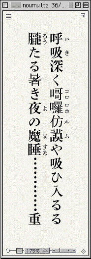
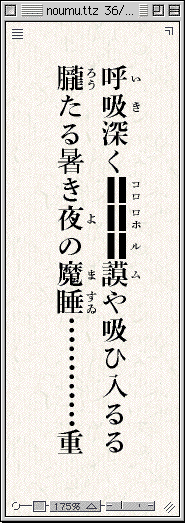
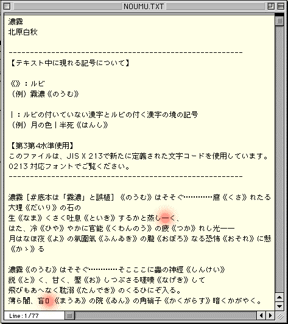
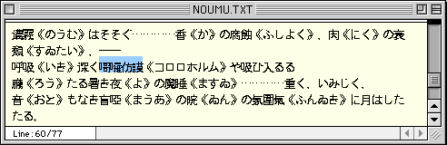
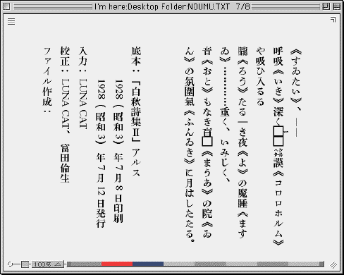
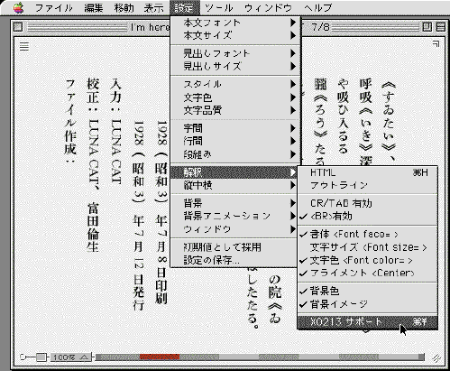

新JIS漢字で読んでみよう
新JIS漢字の旨味を、まず読んで確かめてみましょう。
必要なフォントやツールの置き場所を示します。
第3第4水準の漢字や、新たに組み込まれた記号などを使ったファイルも、用意しました。
以下のステップを踏めば、今すぐ、新JIS環境を体験できます。
ここで紹介する新JIS漢字に対応したフォントは、Windows95、98、Meと、Unix、Macintoshで利用できます。ただし、WindowsNTとWindows2000では、内部処理に使われているUnicodeと、シフトJISの変換テーブルが新JIS漢字に対応していないために、現時点では使うことができません。
旧JIS漢字にのみ対応した従来のフォントで新JISのファイルを開くと、第3第4水準の漢字などが化けしてしまいます。
北原白秋の「濃霧」と名付けられた詩の一節を示します。


●T-Timeによる表示。v2.2からは、新JIS漢字に対応している。
これまでの第1第2水準だけでは、右の通り、「コロロホルム」がうまく表示できませんでした。
問題のその字が、第3第4水準に盛り込まれました。
新JIS漢字を使えば、左のように、「濃霧」をすっきりと表示できます。
新JIS漢字で読み書きするには、そこに盛り込まれた文字を表示できるフォントが必要です。
新しい環境を、今すぐ利用できるようにしたいと考える人の努力が繋がって、Windows、UINX、Macintoshで共通して使える新JIS漢字対応のフォントが公開されています。
KandataとHabianです。
Kandataのインストール
Kandataは、拡大、縮小しても文字の際がなめらかな、アウトラインフォントです。
プリントアウトに適合し、画面上では、比較的大きなサイズで用いて生きます。
テキストブラウザーのT-Timeにも、なじみます。
Windows、UNIXの方は、ここから、Kandata4.tar.gz（実装水準4に適合するKandata）を引き落としてください。（ならべて置いてある、実装水準3に適合するKandata3.tar.gzでは、第4水準の漢字が表示できません。）
解凍して現れるフォルダの中にある「KANDATA.107.SJ3」を参考に、インストールしてください。
Macintoshの方は、ここから、Kandataをダウンロードしてください。
解凍して現れるフォルダの中にある「はじめに読んでください」を参考に、インストールしてください。
Habianのインストール
Habianは、画面上で、比較的小さなサイズで用いて生きるよう作られた、ビットマップフォントです。
エディターで文書を作るときなどに、よくなじみます。
Habianの詳しい説明は、こちらで。
Windows、UNIXの方は、ここから、Macintoshの方は、ここから、Habianを引き落としてください。
Windows、UNIXの方は、ダウンロードしたフォルダの中にある、「Habian.107.SJ3」を参考に、インストールしてください。
Macintoshの方は、ダウンロードしたフォルダの中にある「はじめに読んでください」を参考に、インストールしてください。
新JIS漢字を利用して、これまで表示できなかった文字を補った「濃霧」のテキストを、zipで圧縮し、ここに置いておきます。
解凍後、エディターで開いて下さい。
最初に開いた段階では、以下のように、「濃霧」のところどころが白の四角になっています。
詳しく見ていくと、文字化けくさいところも見つかります。

●赤で印を付けた「―」は、文字化け。「□」は、表示できていない。（Macintoshの表示例。）
あなたのエディターのフォントは、旧JIS漢字のみに対応したものに設定してあるはずです。
第3第4水準の漢字は入っていませんから、これらは当然表示できません。
では、エディターのフォントを、新JIS漢字に対応したものに切り替えてみましょう。
「濃霧」の全文を選択してから、画面表示用のフォントを、HabianもしくはKandataに切り替えてください。

●Habianに切り替えた例。画面上で小さく表示するには、Habianが適している。
問題の「コロロホルム」をはじめ、すべての文字がきれいに表示されたはずです。
今度は、プリントアウトしてみましょう。
印刷用のフォントを別個に指定できるエディターでは、KandataもしくはHabianに切り替えておくのを忘れずに。
印刷時には、Kandataがお薦めです。
T-Timeと名付けられたボイジャーのテキストブラウザーが、いち早く新JIS漢字に対応しました。（v2.2以上）
無償で利用できる機能限定版を、ここから入手できます。（ダウンロードしたプログラムは、料金を支払って登録コードを入手すれば正規版として、購入前はお試し版として使えます。）
旧バージョンのT-Timeを使っている方は、あらかじめこれまでのものを削除してから、新しいものをインストールしてください。
「濃霧」を、T-Timeの専用ファイル形式にしたてたものを、ここに置きます。（ファイル名は、「noumu.ttz」です。）
まず、最新版のT-Timeを引き落とし、指示に従ってインストールしてから、「noumu.ttz」をダウンロードしてください。
「noumu.ttz」は、T-Timeの機能限定版で読めます。
T-Timeを起動し、メニューの「ヘルプ」から「T-Timeヘルプ―総目次―」を選び、順にマニュアルを読みながら、このテキストブラウザーの使い方を確認してください。ウインドウや文字の大きさを自由に変更できるT-Timeの旨味を、是非確かめてみてください。
機能限定版で利用できるのは、あらかじめttz形式の専用ファイルに仕立てたものだけですが、正規版では、任意のテキストやHTMLファイルを自由に開けます。
v2.2以上ではこの際、第3第4水準の文字も、正しく表示できます。
登録ユーザーになっている人は、先ほどダウンロードした「濃霧」のテキストを、組み込み済みのT-Time（v2.2以上）で開いてみてください。
最初に開いた状態では、第3第4水準の文字が化けています。

●2行目、6行目に、白くぬけたところがある。２行目の「ヘクタール」、4行目の「―」は、文字化けが疑われる。
T-Timeのメニューの「設定」から「解釈」を選び、「X0213サポート」をチェックします。

●「X0213サポート」といった〈スイッチ〉を設けておくことで、新JIS環境への切り替えは大きな混乱なしに乗り切れるはずだ。こうした切り替えの機能は、今後、エディターなどにも付加していってほしい。
これで、第3第4水準の漢字を含む、新JIS漢字コードのすべての文字が、正しく表示されます。
これまで外字としていたものを、新JIS漢字の文字で置き換えた、「青空文庫 明日の本棚」を設けました。
これからの青空文庫の姿を、どうぞここで体験してみてください。
「明日の本棚」には、新鮮な驚きはないはずです。
淡々と作品を読み終えたあなたには、どこがどう変わったのか、さっぱりわからないと思います。
私たちはそれこそが、新JIS環境の素晴らしい成果なのだと考えています。
漢字コードの存在が、どんどん見えなくなっていく―。
画面やプリントアウトを介して読みながら、コンピューターを使っているという意識が、よりいっそう薄れていく―。
そうなってはじめて、先人から受け継ぐべき言葉と、自分自身が書き示すべき表現を、私たちはためらいなく電子環境に置くことができるでしょう。
新JIS環境整備のために力をふるっている人たちは、漢字コードを視界から消し去ろうと努めているのだと思います。
・このページの冒頭に示した、北原白秋「濃霧」のT-Timeによる表示を細かく見てみると、問題の「コロロホル」の書体が微妙に異なっているのがわかるでしょう。第1第2水準の文字は、T-Timeの表示になじみのいい秀英太明朝で示しながら、第3第4水準の文字だけ、Kandataで表示するという工夫が凝らされているのです。
・Kandataの原制作者は、wakabaさんです。wakabaさんがKandataの保守を停止された2000年11月以降、内田明さんがKandata補完計画をスタートさせて開発・保守に取り組まれました。
2001年11月、内田さんはこれまでの作業の成果を実装水準3の公有フォント、拡張Watanabe明朝としてまとめ上げ、Kandata補完計画を完了されました。
実装水準4に適合するKandataの公開は、その後、Kandata保管計画によって継続されています。
・この文書では新JIS漢字対応フォントとして、KandataとHabianだけを紹介しました。加えて、UnixのX Windowなどで利用できるものを中心に、複数のフォントが開発され、公開されています。
新JIS漢字対応フォントに関する情報は、wakabaさんによる「JIS X 0213:2000 (JIS2000) - JIS漢字 第3水準と第4水準 -」の「JIS2000 な free font」を参照してください。
上記ページで紹介されているjiskan16-2000は、Habianの元となったフォントです。
戻る。
続きを読む。